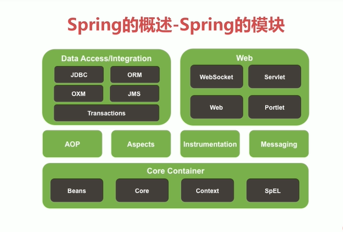

什么是Spring？
Spring是一个开源框架
Spring为简化企业级应用开发而生，使用Spring可以使简单的Javabean实现以前只有EJB才能实现的功能
Spring是JAVASE/EE的一站式框架
Spring的优点
方便解耦，简化开发
Spring就是一个大工厂，可以将所有对象创建和依赖关系维护，交给Spring管理
AOP编程的支持
Spring提供面向切面编程，可以方便的实现对程序进行权限拦截，运行监控等功能
声明式事务的支持
只需要通过配置就可以完成对事务的管理，而无需手动编程
方便程序的测试
Spring对Junit4支持，可以通过注解方便的测试Spring程序
方便集成各种优秀框架
Spring不排斥各种优秀的开源框架，其内部提供了对各种优秀框架（如：Struts，Hibernate，Mybatis等）的直接支持
降低JAVAEE API的使用难度
Spring 对JavaEE开发中非常难用的一些API（JDBC。JAVAMAIL，远程调用等），都提供了封装，使这些API应用难度大大降低
